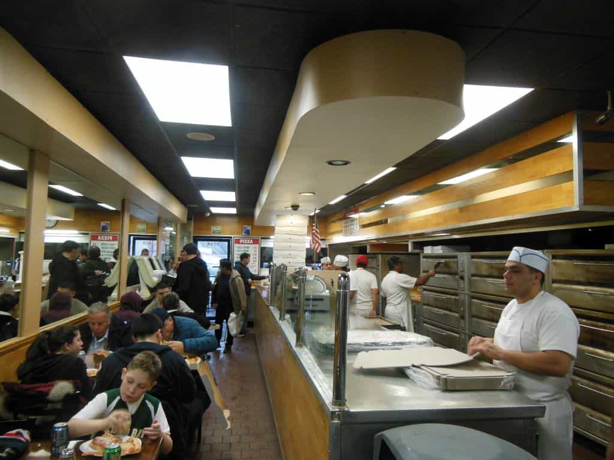

Kyle is an entrepreneur and nomad who has been living abroad since 2016. He blogs at This Is Trouble. Follow him on Facebook.


If there’s one thing I’ve learned since leaving my corporate gig for greener pastures, it’s this: online, people can be really, really cheap.
I mean this in the sense of trying to sell products, especially certain niches. For example, who is more likely to make an impulse buy—a male mathematician or a female makeup artist? In most cases, the math guy has had a life of critical and analytical thinking, backed by his generally higher male standards of logic. On the contrast, a makeup artist is much more of a “free spirit”; likely to make decisions based off of emotions and feelings.
This kind of logic is pretty obvious on the surface: women are easier to sell to than men. If you need proof, look no further than at the household spending by gender demographics. But what if we take it a step farther, and look at it in terms of online versus offline business. Is one niche even easier to sell to than the other?
Generally speaking, those who run online businesses like myself have less of a budget for expenses than a brick and mortar shop. For example, if I’m hiring a freelance writer to round off some articles on one of my small sales sites, I’m looking for some sort of middle ground between quality and price.
If I can find a greater writer from a place in Eastern Europe, who has a grasp on English that is 80% as good as a native speaker—I’m going to take that. Sure, it’s going to require more edits (I’m picky), but the Eastern European writer’s price is also going to probably be a third of what a native speaker living in the west would charge.
So I take the 80% quality for the third of the price. Nothing is probably ever going to change that, simply because of the nature of the business that I’m in.
However, let’s take a brick and mortar type of business—a pizza shop. The owner has little knowledge of anything about the internet—he doesn’t know how to tweet, use Facebook, or design his own website. He’s naturally hesitant of hiring things out to people abroad because of several factors.
Therefore, a brick and mortar guy is far more likely to take the reverse of what I would do. He’ll take the higher quality at the higher price rather than a majority of the quality at a much lower price.
Throughout my time living abroad, I’ve built my online business, but I’ve also worked with a few clients in a more offline space. I am making a full-time income and living off of my blog as I’ve shown, but I still take on the occasional consulting or design client if it suits me. Having a little extra money in the bank is never a bad thing. It has been amazing how much more they are willing to pay, how much easier they can be to work with, and how much more pleasant the experience has been.
Now, I will admit that my sample size is small. But it’s enough by now that I’m starting to see some trends to it. In addition, I also should mention that the majority of these clients more or less fell into my lap—I didn’t have to go out and actively hunt from them. Instead, they came to me on recommendations. So that is a huge time consideration that would come into play.
With that being said, when people come to me and ask now, “How do I make money online?”, I’m tempted to start saying they should go offline to do so.
Find brick and mortar clients who are in need of work online. Clients who don’t care where you are in the world—as long as you pick up the phone, do a good job, and they’re satisfied with the price you charge.
For some small shops, paying someone a thousand dollars a month to run the website, post to social media, and handle everything with their online presence is a good deal. Find one or two of these clients and you’re looking at a great salary for a place like Southeast Asia or Eastern Europe.
There are plenty of other fields that could benefit from someone keeping an employee on a monthly retaining contract.
Plenty of businesses need a consistent source of content—if you were tasked with writing a handful of articles a week and posting them to a blog, that could pay well. I pay my own staff for anywhere between 3 and 10 articles a week, for example.
Perhaps a local business runs a large Facebook group or forum, and needs someone to moderate it every day—something they don’t have the time or energy for.
Or finally, perhaps a business wants something as simple as some cool Instagram graphics to be posted daily (which can be done in a matter of minutes with the right tools), and is willing to pay someone to make them and auto-schedule them out for a month.
The point is, the more the internet grows, the more that smaller businesses are being forced into having an online presence. This has never really been part of the job for these small business, but their hand has now been forced. The internet is not going away, and not having an internet presence is hurting their credibility. The thing is, it’s not like the day-to-day tasks of running a brick and mortar type of business have gone away. The internet is just a forced addition—one with a steep learning curve and requiring a massive time investment.

I will be the first to say that this article does not come based on massive amounts of experience. Just a small sample size that has shown some potential. But perhaps many people who as aspiring to live abroad and make money on the internet are over-complicating things.
Maybe there’s no need for snazzy opt-ins, sales funnels, A/B testing, and all of the other gadgets and gizmos that come with the territory of internet business. Perhaps the real answer to your problems is something as simple as walking into the pizza shop down the street and meeting the owner, or striking up your conversation with your dentist about his web presence.
It’s definitely not “easy”, but if there’s one thing I’ve learned from business, it’s this: it doesn’t always work, and sometimes, it’s just a matter of trying things until something finally sticks.
If you’re looking to free up more time to pursue business, read my book King’s Code. For more advice about living in Eastern Europe, check out my blog.
Read More: 7 Things I Learned On The Road This Year